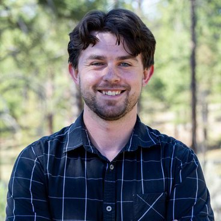

Ely F. Miller
he/himPhD student, Biological Sciences
Northern Arizona University
About
I am a PhD student studying systems biology at Northern Arizona University (NAU). Specifically, I study different methods for making models of complex biological systems (e.g., disease transmission, cell signaling, cancer), as well as different methods for quantifying (e.g., parameterizing) those models to make them applicable to the real world. My first interests in infectious disease and cancer modeling came from an innate interest in my biology coursework while completing high school (and a concurrent A.S. in General Studies) at Santa Fe Community College, and this expanded into the modeling work I do today when I first came to NAU as an undergraduate student in 2019.
I am currently working on my PhD dissertation under Dr. Richard Posner, and I also collaborate with Dr. Spencer Fox (NAU; infectious disease forecasting), Dr. Ye Chen (NAU; mathematics and model parameterization algorithms), Dr. Matthew Salanga (NAU; arsenic and uranium toxicity, mitochondrial fusion and fission in disease), and Dr. Paul Keim (NAU Regents’ Professor, Pathogen and Microbiome Institute; historical classification and mutational lineage of Clostridium botulinum).
Currently, I am developing FluBioNetFit (FluBNF), a wrapper for PyBioNetFit (PyBNF), model-fitting software for biological models written in the BioNetGen Language (BNGL), to make it easier to build and fit epidemiological models for real-time epidemic and pandemic forecasting. Most of my work aims to improve the speed and accuracy of mechanistic forecasting, so that one day we have fast and accurate methods that enable better predictions of epidemics and, hopefully, patient-specific treatment for various diseases.
Forecasts
US flu hospital admissions
Explore by state →Oracle SIHRS categorical forecast